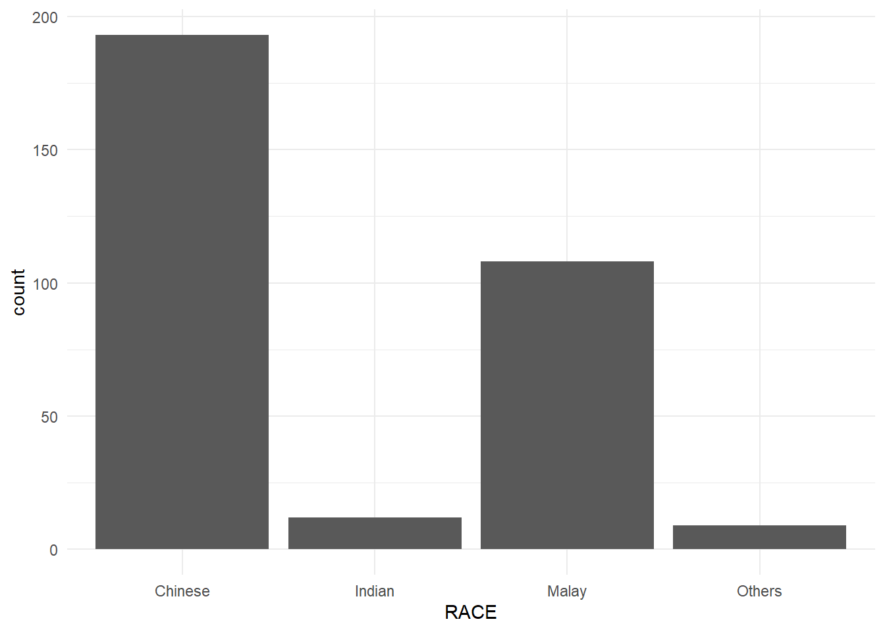

Click to show/hide the code
pacman::p_load(tidyverse)The code chunk below uses p_load() of the pacman package to check if the tidyverse packages are installed on the computer. If they are, they will then be loaded into the R environment.
pacman::p_load(tidyverse)To import the data “Exam_data.csv” into the R environment, read_csv() of the readr package is used, as seen in the code chunk below.
exam_data <- read_csv("data/Exam_data.csv")Rows: 322 Columns: 7
── Column specification ────────────────────────────────────────────────────────
Delimiter: ","
chr (4): ID, CLASS, GENDER, RACE
dbl (3): ENGLISH, MATHS, SCIENCE
ℹ Use `spec()` to retrieve the full column specification for this data.
ℹ Specify the column types or set `show_col_types = FALSE` to quiet this message.
ggplot(data = exam_data)ggplot() initializes a ggplot object, and the data argument defines the data set to be used. However, since the aesthetics and geometries are not defined yet, the canvas will be blank.
The code chunk below adds the aesthetic element into the plot:
ggplot(data = exam_data, aes(x = MATHS))
As seen from the plot, the x-axis and the axis’s label are added. To add the charts, we need to proceed to Step 3.
geom_bar())ggplot(data = exam_data,
aes(x = RACE)) +
geom_bar()
geom_dotplot())ggplot(data = exam_data, aes(x = MATHS)) +
geom_dotplot(binwidth = 2.5, dotsize = 0.5) +
scale_y_continuous(NULL, breaks = NULL)
scale_y_continuous is used to remove the y-axis.
geom_histogram())ggplot(data = exam_data, aes(x = MATHS)) +
geom_histogram()`stat_bin()` using `bins = 30`. Pick better value with `binwidth`.
By default, the bin width is 30.
geom()In the code chunk below:
bins argument is used to change the number of bins to 20
color argument is used to change the outline color of the histogram to black
fill argument is used to change the fill color of the histogram to violet
ggplot(data = exam_data, aes(x = MATHS)) +
geom_histogram(bins = 20, color = "black", fill = "violet")
aes()The code chunk below changes the fill color of the histogram using the subgroup of aes(), which in this case, is the gender of the students.
ggplot(data = exam_data, aes(x = MATHS, fill = GENDER)) +
geom_histogram(bins = 20, color = "grey30")
geom_density())ggplot(data = exam_data, aes(x = MATHS)) +
geom_density()
ggplot(data = exam_data, aes(x = MATHS, color = GENDER)) +
geom_density()
geom_boxplot())ggplot(data = exam_data, aes(x = GENDER, y = MATHS)) +
geom_boxplot()
Notches can be added to help visually assess whether the median of the distributions differ:
ggplot(data = exam_data, aes(x = GENDER, y = MATHS)) +
geom_boxplot(notch = TRUE)
geom_violin())ggplot(data = exam_data, aes(x = GENDER, y = MATHS)) +
geom_violin()
geom_point())ggplot(data = exam_data, aes(x = MATHS, y = ENGLISH)) +
geom_point()
The code chunk below plots the data points on the boxplots using geom_point() and geom_boxplot.
ggplot(data = exam_data, aes(x = GENDER, y = MATHS)) +
geom_boxplot() +
geom_point(position = "jitter", size = 0.5)
There are two types of facets supported by ggplot2, namely facet_grid() and facet_wrap().
facet_grid()The data can be split by one or two variables, either in the horizontal or vertical direction. This is done by giving a formula to facet_grid(), of the form vertical ~ horizontal
ggplot(data = exam_data, aes(x = MATHS)) +
geom_histogram(bins = 20) +
facet_grid(GENDER ~ .)
ggplot(data = exam_data, aes(x = MATHS)) +
geom_histogram(bins = 20) +
facet_grid(~ GENDER)The code chunk below splits vertically by GENDER, and horizontally by RACE.
ggplot(data = exam_data, aes(x = MATHS)) +
geom_histogram(bins = 20) +
facet_grid(GENDER ~ RACE)facet_wrapInstead of faceting with variables in the horizontal or vertical direction, facet_wrap wraps the panels into a matrix.
ggplot(data = exam_data, aes(x = MATHS)) +
geom_histogram(bins = 20) +
facet_wrap(~ CLASS)
You can also specify the number of columns or rows to wrap the facets, using ncol or nrow
ggplot(data = exam_data, aes(x = MATHS)) +
geom_histogram(bins = 20) +
facet_wrap(~ CLASS, ncol = 2)ggplot(data = exam_data, aes(x = MATHS)) +
geom_histogram(bins = 20) +
facet_wrap(~ CLASS, nrow = 2)
There are two methods to work with statistics: using the stat_summary() method or the geom() method.
stat_summary() methodggplot(data = exam_data, aes(x = GENDER, y = MATHS)) +
geom_boxplot() +
stat_summary(geom = "point",
fun = "mean",
color = "red",
size = 4)
geom() methodggplot(data = exam_data, aes(x = GENDER, y = MATHS)) +
geom_boxplot() +
geom_point(stat = "summary",
fun = "mean",
color = "red",
size = 4)
By default, the bar chart of ggplot2 is in the vertical orientation, as seen earlier in “Step 3”.
To flip the coordinates (so that the bar chart is in a horizontal orientation), coord_flip is used.
ggplot(data = exam_data, aes(x = RACE)) +
geom_bar() +
coord_flip()
The following scatter plot shows the default limits of the x and y axes. However, as the range is not equal, it can be quite misleading.
ggplot(data=exam_data, aes(x = MATHS, y = ENGLISH)) +
geom_point() +
geom_smooth(method=lm, size=0.5)Warning: Using `size` aesthetic for lines was deprecated in ggplot2 3.4.0.
ℹ Please use `linewidth` instead.`geom_smooth()` using formula = 'y ~ x'
In order to define the limits of the axes, coord_cartesian is used. The following code chunk fixes the range of limits of both axes to 0 - 100.
ggplot(data=exam_data, aes(x= MATHS, y=ENGLISH)) +
geom_point() +
geom_smooth(method=lm, size=0.5) +
coord_cartesian(xlim=c(0,100), ylim=c(0,100))`geom_smooth()` using formula = 'y ~ x'
Themes allow us to change the appearance of the charts, and are not related to the data itself. Some of the elements that can be modified with themes include background color, font size, grid lines etc.
Some of the built-in themes include: theme_gray() (default), theme_bw(), theme_classic(), theme_minimal.
The following code chunks are some examples of what the different built-in themes look like.
ggplot(data = exam_data, aes(x = RACE)) +
geom_bar() +
theme_classic()ggplot(data = exam_data, aes(x = RACE)) +
geom_bar() +
theme_minimal()